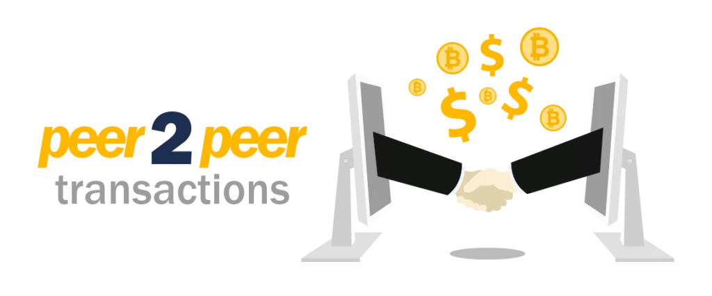

Imagen ilustrativa del artículo (CC)
Compartir Twittear
Voy a detallar de manera sencilla los medios a partir de los cuales es posible adquirir BTC en Argentina.
Algunas de las opciones se incorporan también en otros países, por lo que esta pequeña guía puede extenderse hacia todos los lectores hispanohablantes.
Si recién te acercás a Bitcoin, tal vez debas primero leer de qué se trata.
Adquirir BTC, en la práctica, es muy similar a las compras online. A grosso modo existen tres métodos para hacerlo:
Suelen aceptar transferencias o depósitos bancarios, Rapi Pago, Pago Fácil o Mercado Pago.
Coinmonitor es un sitio que simplifica los más importantes de Argentina (tiene versiones para varios países de latinoamérica) y ordena en tiempo real los valores de compra y venta de cada uno de ellos.
Ingresando en el link podés verificar cuáles son las opciones disponibles al momento de leer la información.
Te aconsejo contrastar los valores con los que devuelve el broker que pretendas utilizar porque pueden existir -inusuales- diferencias en la sincronización de la información.
Una vez elegido el sitio en el cual realizarías la compra, deberías registrarte, validar tus datos y realizar una transferencia bancaria o depósito para recibir luego tus BTC.
La contra que tiene este sistema es que prácticamente todos los exchanges tuvieron o tienen problemas y pésimos servicios de soporte.
Las demoras en las transacciones realizadas bajo esta modalidad, son algo cotididano.
Algunas empresas incluso desaparecieron robando el dinero de sus usuarios, tanto en Argentina como en otros países (Mt.Gox, Bitinka, entre otras).
Entiendo que muy pocos están al tanto de la estafa de Quadringa, una fintech que funcionó como broker y concluyó siendo un SCAM que se quedó con el dinero de muchísima gente.
El CEO de la empresa murió y nadie tuvo acceso a su capital.
Operar P2P: NO corralito, NO quiebres de empresas, NO hackeos.
Bitcoin puede ser operado sin intermediarios, persona a persona. Su esencia permite que las operaciones se validen por todos sus poseedores de manera automática.
No necesitás confiar en un exchange ni en sus protocolos de seguridad, porque la red de Bitcoin ya es lo suficientemente segura como para que la uses por tu cuenta.
Al operar de esta manera podés pagar en efectivo, Paypal, Western Union, gifcards, etc.
Local Bitcoins es uno de los exchanges más antiguos que existe. Funciona desde el año 2012, y al día de publicación de este artículo permite comerciar BTC en más de 8000 ciudades y casi 250 países.
El registro en el sitio es muy sencillo así como la validación de datos y realización de las transacciones. Al momento de comprar, si clickeás en cada vendedor podés obtener estadísticas detalladas del mismo.
Te recomiendo prestar especial atención a esa información antes de realizar cualquier tipo de intercambio. Deberías operar con vendedores con mayor cantidad de transacciones, tiempo en la plataforma y verificaciones de confianza.
La comisión a pagar es del 1% para los vendedores (no pagarías al comprar BTC).
Local Bitcoins suele mantener en promedio un precio apenas más alto que el ofrecido desde los brokers mencionados antes, pero otorga la confianza de ser prácticamente la única plataforma sin problemas desde el año 2012.
Paxful es una alternativa similar a Local Bitcoins, nacida en el año 2015. La principal ventaja que tiene respecto de esta última es la posibilidad de realizar las transacciones a partir de una interfaz web mucho más amigable.
Si pensás operar desde tu celular, te recomiendo ampliamente probarla.
Estos son algunos de los más de 300 métodos de pago que admite:
Las estafas en la plataforma no existen. Incorpora un sistema de escrow que retiene y puede liberar el depósito en caso de disputas.
Cuenta con un equipo excelente de profesionales y, a mi criterio, presta especial atención a lo que sus clientes necesitan: interfaz, medios de pago y facilidad en las transacciones.
Paxful mantiene la misma comisión que Local Bitcoins: 1% para los vendedores.
Hodl Hodl está obteniendo popularidad en los últimos meses. Su propuesta es generar un espacio de intercambio totalmente descentralizado.
Se destaca por no requerir KYC por parte de la plataforma, quedando esto a discreción de compradores y vendedores en cada operación.
Entiendo que por este motivo, es una plataforma para usuarios más bien avanzados. Si valorás tu privacidad, deberías elegir esta alternativa.
Diferencio esta modalidad de los tres sitios mencionados porque éstos incorporan una serie de medidas de seguridad, que en operaciones sin intermediarios, simplemente no están.
P2P - Imagen desde Medium
Existen grupos de Facebook donde sus miembros intercambian depósitos o dinero en efectivo por bitcoin (Bitcoin Argentina es uno de ellos).
La mayoría de estafas nacen bajo esta metodología. Muchos compradores transfieren dinero y nunca reciben sus BTC, la mayoría siendo víctima de perfiles de usuario clonados.
Las transacciones directas entre personas quedan bajo su exclusiva esfera de acción, y por ese motivo, no son recomendables para recién iniciados en criptomonedas. La única ventaja que tendria operar de esta manera, es permanecer totalmente fuera del ente recaudador.
Entiendo que es muy probable que en el futuro las transacciones se realicen masivamente de manera descentralizada. Mientras tanto te recomiendo adquirir bitcoins de manera P2P utilizando las plataformas mencionadas.
Es indispensable que cuentes con una billetera o monedero virtual para que se realice el depósito de BTC, y una casilla de e-mail válida para registrarte en las plataformas.
Si bien la mayoría (con excepción de Hodl Hodl) cuenta con wallets integradas, te recomiendo exhaustivamente mover de inmediato tu capital en BTC a tu wallet personal.
Si la transacción se realiza a través de un broker, necesitarías además presentar una foto del DNI para validar tu información.
Los vendedores ofrecen públicamente información acerca de los horarios en los que operan. Te aconsejo respetarlos para evitar demoras innecesarias.
Los vendedores ofrecen públicamente información acerca de los horarios en los que operan. Te aconsejo respetarlos para evitar demoras innecesarias.
A modo personal, te aconsejo comprar o vender durante la mañana para que las transferencias impacten en el día.
La acreditación de bitcoins suele darse en apenas minutos pero en situaciones excepcionales, puede que se retrase algunas horas. Esto está sujeto a la congestión de la red al momento de las operaciones y al fee elegido al momento de operar.
No deberías modificar el fee que ofrezca la plataforma donde compres o vendas. En próximos artículos voy a analizar esta cuestión en detalle.